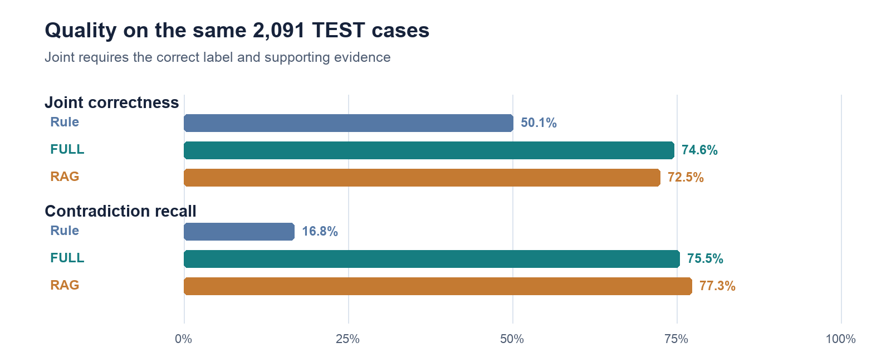
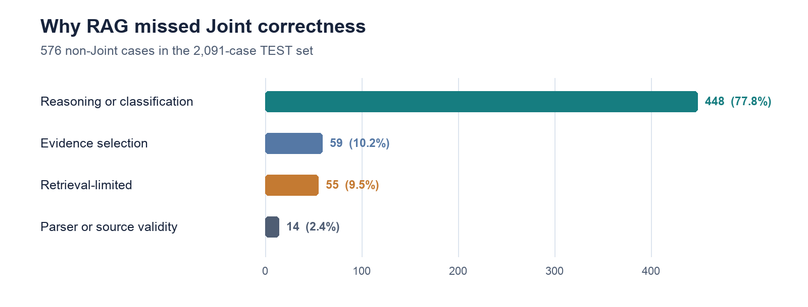

PE6201 · End-of-course project report
NDATrace: Evidence-Grounded NDA Review
A reviewer aid for checking confidentiality requirements against an NDA, with an evaluation of its accuracy, evidence and practical limits.
Review context and core problem
For each confidentiality requirement in a vendor NDA, can a reviewer identify whether the document satisfies it, conflicts with it or says nothing—and verify the clause behind that judgment?
Tina, a legal operations analyst, checks vendor NDAs against 17 such requirements before a lawyer acts. Keyword search can miss paraphrases and exceptions; a fluent LLM answer can conceal that it found no relevant clause. A vendor survey of 286 legal professionals reports that contract reviews commonly take 2–4 hours. That establishes a plausible workload, not a measured benefit of this project.
Objective and scope
NDATrace aims to make each requirement judgment inspectable and correctable. It accepts an NDA and a requirement, returns Entailment, Contradiction or NotMentioned with cited text, and records Tina’s Approve, Override or Reject decision with a note. The working prototype changes what a reviewer can inspect and contest: its output is a traceable claim rather than a bare verdict. It has not yet changed a real legal team’s throughput, because no reviewer-time or field study was run. The system never approves an NDA on its own.
Technical approach and design choices
I began with a $0 keyword-rule baseline, then compared full-context GPT-5-mini (FULL), retrieval-augmented GPT-5-mini (RAG), and a selective agent. The rule system achieved 50.1% Joint correctness on TEST. Its failure on paraphrases justified using a language model; it did not automatically justify retrieval or an agent. For RAG, I tested chunking, candidate generation and reranking before freezing a clause-aware, BM25 top-20 → cross-encoder top-5 pipeline.
On 4,371 evidence-bearing TRAIN cases, BM25 plus reranking and dense retrieval plus reranking had virtually identical Recall@5: 92.24% versus 92.22%. They agreed on 4,370 cases. The reranker mattered; the embedding index did not earn its extra complexity after reranking was present. A more elaborate GPT prompt briefly improved one TRAIN sample, then reversed direction on a fresh confirmation sample, so I retained the simpler P0 prompt. These are small but consequential decisions: adding machinery only when a repeatable gain survives a fair comparison.
Data and evaluation method
ContractNLI contains 607 benchmark NDAs with gold labels and evidence spans. These were withheld from inference and used only for scoring. The matched final comparison covers the same 2,091 TEST cases from 123 NDAs. “Joint” requires both the correct label and correct evidence; label accuracy alone can count an unsupported answer as success. An earlier superseded run had scored TEST once. The final configuration was not tuned on it in this cycle, but calling the comparison fully blind would be misleading.
Findings and error analysis
| Metric | Rule | FULL | RAG |
|---|---|---|---|
| Label accuracy | 59.0% | 77.6% | 76.8% |
| Joint correctness | 50.1% | 74.6% | 72.5% |
| Contradiction recall | 16.8% | 75.5% | 77.3% |
| API cost per case | $0 | $0.00202 | $0.00168 |

FULL’s 2.1-point Joint lead over RAG is statistically significant in the paired comparison (McNemar p=0.0047); their label-accuracy gap is not (p=0.217). RAG caught 170/220 Contradictions (77.3%; 95% Wilson interval 71.3–82.3%), but only 153/220 had both the right conflict label and evidence. Its apparently reassuring label number therefore overstates how often a reviewer receives a sound, checkable result. Across all classes, 576/2,091 RAG cases failed Joint. My proposed ≥5-point gain in risk-sensitive recall for RAG over FULL was also missed: the gain was only 1.18 points. That failure should stay in the conclusion, not disappear behind a different headline.
What the benchmark leaves unanswered
The held-out comparison is reproducible and stronger than hand-picked examples. Yet ContractNLI is a proxy for enterprise contracts, not a test of messy, long, negotiated documents or actual reviewer behavior. The 90.6% macro-F1 oracle result supplied gold evidence on a separate 300-case sample. It locates possible headroom; it is not a production ceiling or directly comparable TEST score.
The failure taxonomy sharpens the next question. Of RAG’s 576 non-Joint cases, 448 were classified as reasoning/classification failures, versus 55 retrieval-limited cases. This taxonomy is an analysis of saved errors, not an independent clinical-grade adjudication, but it warns against simply increasing top-k. More retrieved text could add distraction while leaving the model’s interpretation of an available clause wrong.

Architecture and business trade-offs
I serve RAG in the prototype even though FULL wins Joint on these documents. RAG cut mean model input by 50.4% and measured API spend by 16.8%, while presenting a short ranked evidence set to Tina. Its model context is bounded per requirement, although document ingestion and indexing still scale with length. At ContractNLI’s modest document lengths, FULL’s quality edge may be more valuable than RAG’s fractions-of-a-cent saving; I therefore keep FULL as the quality reference. If real-document tests preserve FULL’s advantage without breaking context or budget, the serving decision should change.
The business model is weaker than the technical result. $0.00168 is measured API cost per RAG case, not workflow cost. A $3.33 human-review assumption yields a modeled $0.92 all-in RAG case versus $0.85 for FULL. It charges full review effort only to non-Joint outcomes even though every prototype answer is checked by a person. Without measured review time, the calculation exposes sensitivity to human effort; it does not establish savings or return on investment.
Oversight and remaining risks
The selective agent made zero retrieval-tool calls across 15 triggered cases in a 150-case comparison. Its extra steps earned no net Joint improvement, so I removed it from the runtime. Four tested confidence-routing policies could not simultaneously keep review workload under 40% and residual Joint error below 10%; consequently, every result still goes to a reviewer. The reviewer decision log makes that oversight concrete, but a flag and an audit trail do not make a wrong answer safe.
Security was similarly mixed. Before remediation, four of eleven injection attacks succeeded. A deterministic guard later improved the targeted prompt-injection check only to PARTIAL; those eleven attacks were not rerun, so a post-fix detection rate would be invented. Request-size, budget and rate controls passed their targeted retest, while authentication and distributed limiting remain absent. This prototype is confined to public or synthetic NDAs.
Conclusion and future work
The next experiment should use permissioned, longer NDAs and legal reviewers, with blinded clause-level adjudication and measured time-to-decision. I would compare FULL and RAG again by document length, error severity and reviewer correction rate, then test whether targeted reasoning changes—not broader retrieval—reduce the 448-case failure bucket. Before any pilot with private contracts, authentication, stronger injection tests and a clear retention policy are necessary. The project has produced an inspectable reviewer aid and a credible benchmark; it has not yet demonstrated dependable legal workflow improvement.